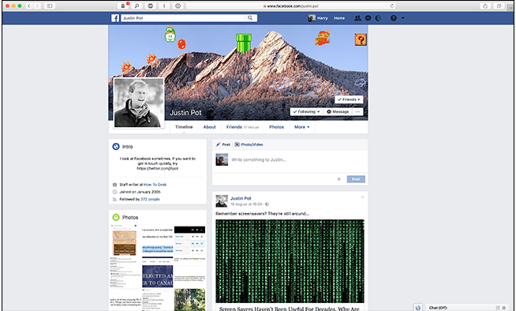
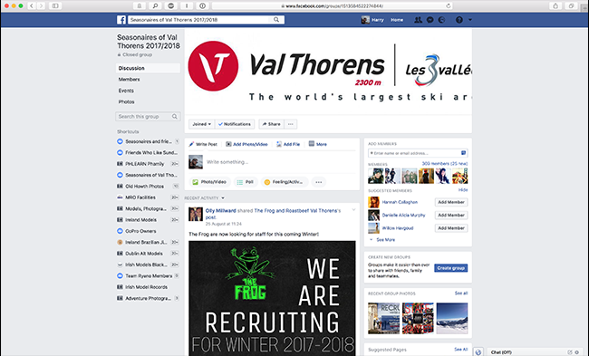
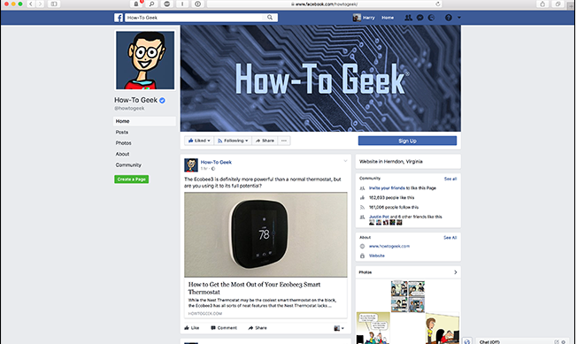

| Facebook Profile | Facebook Group | Facebook Page |
|---|---|---|
|  |  |  |
| A Facebook Profile is what you probably think of when someone mentions Facebook. It’s a personal account for one person that’s (meant to be) in their real name.
With a Facebook Profile, you can:
Connect with people by adding them as Friends or Following them (although you are limited to a maximum of 5000).
Share statuses, photos, videos, links, and so on with your Friends and Followers. Post comments and share things on your Friends’ accounts or message them privately through Facebook Messenger. Like Pages and join Groups. Set up your own Pages and Groups. There are obviously a lot more features, but that’s a broad overview of the main ones. Although you will see some people set up Profiles for their businesses or some other purpose, it’s frowned upon by Facebook. A Profile is for a real person, not a shop. |
A Facebook Group is closer to a community forum than either a Profile or Page. Depending on how the Group is set up, it can be open to anyone on Facebook or just a chosen few. Most Groups are for people who share a common interest or are members of a club. With a Facebook Group, members can: Post things to the Group. Comment on Group posts and interact with other members. Sell things. You need a personal Facebook Profile to set up a Facebook Group, and the fact you are an admin will be public information. |
A Page is similar to a Profile except it can be for anything—not just people. There are Pages dedicated to everything from famous authors to local secondhand car dealerships and circus troupes to fan fiction. If you’re looking to set up some sort of Facebook presence for your business, artwork, superhero alter ego, or even a more professional presence for yourself, a Page is what you’re looking for. With a Facebook Page, you can: Have people connect with you by Liking the Page. Share posts that your Followers will see. Comment on posts on your own page. Respond to messages sent to your Run advertising campaigns. Again, there are other features but those are the most important ones. You need your own personal Facebook Profile to set up a Facebook Page, although you don’t need the information to be public. |